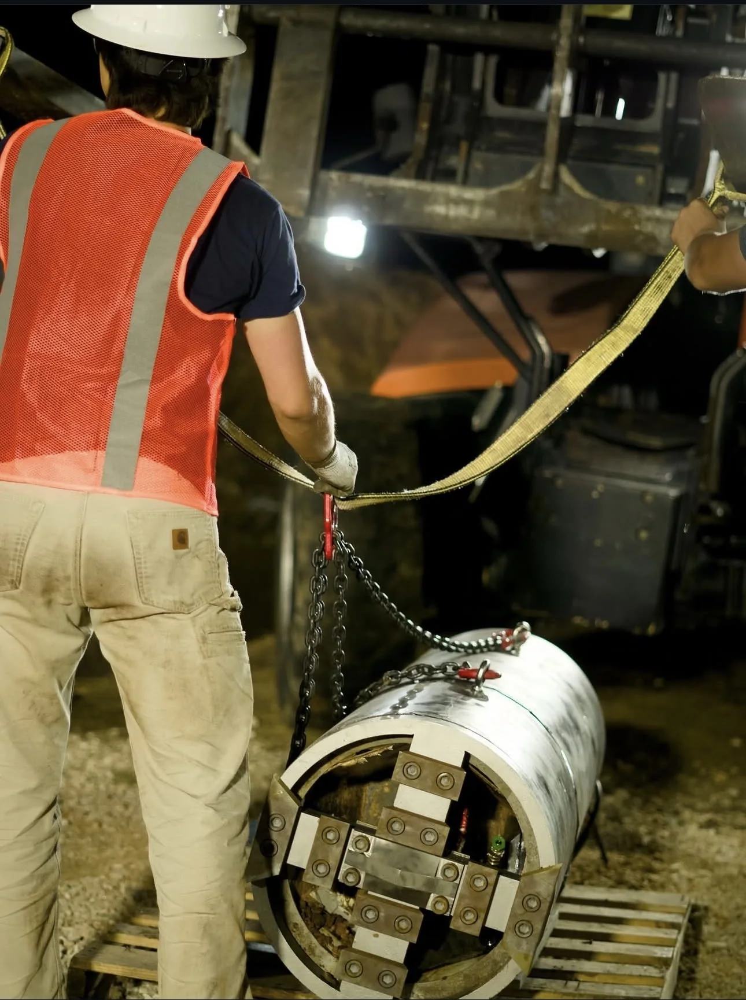

Penn Hyperloop
Controls Engineering Lead (Aug 2026 to now), previously Power and Controls Engineer (Sep 2025 to spring 2026)
Penn Hyperloop builds an autonomous tunnel boring machine for The Boring Company's Not-a-Boring Competition. The team has about 40 members across mechanical, electrical, controls and navigation subteams. I joined in September 2025 as a power and controls engineer. Our 1,000-lb machine placed second at the 2026 competition. Since August 2026 I have led controls engineering for the 2027 machine, with a subteam of five.
- I owned the PLC logic on the 2026 machine. I programmed a Siemens S7-1200 PLC in TIA Portal to run the autonomous drilling state machine. I configured the three Siemens G120 drives and built the PROFINET and Modbus RTU communications.
- I designed the 480 V three-phase power distribution that replaced the 2025 machine's 240 V supply. The 2025 breaker trips stopped after we installed a line reactor on the drive input to cut inrush and harmonic current. A hardwired chain of E-stops, a safety relay and the main contactor removes drive power independently of the PLC program.
- Full-system testing had to wait for the competition site in Bastrop, Texas. That meant debugging in the field under time pressure. We hit GFCI trips, Modbus communication errors and drive overheating, and we contained all three on site.
- For 2027 I own the steering electronics, the split between the PLC and a microcontroller layer, and the safety fault responses. Steering uses four Progressive Automations PA-HD3A linear actuators with Hall-effect position feedback. The navigation subteam is adding three IMUs on a separate microcontroller near the actuators. I am defining the competition-required telemetry GUI as one dashboard: drive status, actuator positions, IMU orientation, faults and power data.
- I lead a controls subteam of five and onboard new members each year. I wrote and taught a 90-minute PLC fundamentals workshop with hands-on exercises and homework. A follow-up session covered our machine's setup and code.